Ask Clarity is integrated for staff-only production and staging rollout. This verifies the PR preview, where Ask is on for every account. No staging or production environment was accessed, deployed, queried or reconfigured. The PR remains draft. The parent session owns the squash merge.
| Check | Result | Evidence or limit |
|---|---|---|
| Initial API run | PASS | Five live turns and persisted reads passed. The earlier harness ID error was corrected and its fixtures removed. |
| Independent UI confirmation | PASS | Fresh verifier drove the real Chromium UI and audited the initial evidence. |
| Independent integration review | PASS | No confirmed blockers in action wiring, L1/L2/L3, rollout, model configuration or migration. |
| Independent security review | PASS | No confirmed blockers. Eight selected suites and 154 tests passed. |
| Question no writes | PASS | |
| One page generated from pasted source | PASS | |
| Hero edit persisted | PASS | |
| Ask Undo restores exact document | PASS | |
| Undo after reload | PASS | |
| Publish Not now leaves draft | PASS | draft |
| Live password not applied before approval | PASS | |
| Password applied only after visible approval | PASS | |
| Public route shows password gate | PASS | |
| Adjacent pages library route | PASS | |
| Phone Ask trigger and full screen panel | PASS | |
| Fixture cleanup restores baseline | PASS | |
| Existing route coexistence tests | PASS | 2 passed, 23.3s, explicit PR 1707 BASE_URL, userPro credentials |
| Post-regression baseline unchanged | PASS | |
| Doctor and preview head | PASS | Signed-in userPro; deployed commitSha and headSha both 827ec07437ddc5254c457ca9463b12c2e4df3866. |
| Node 22.23.1 and frozen install | PASS | pnpm install --frozen-lockfile --prefer-offline. |
| Root typecheck and tests | PASS | All workspace suites passed. Test types remain at the existing 133-error budget. Script/package tests: 2335 passed, one skipped. |
| ESLint and React Doctor | PASS | Changed-file and full-tree ESLint passed. React Doctor exited zero; its existing test-only diagnostic remains outside this change. |
| Asset build and deterministic guards | PASS | Build, deploy-config suite, CI invariants, migration numbers and append-only, LOC, suppression growth, CSS, action effect map, guards table, feature paths and video-reader baseline passed. |
| Migration rehearsal | PASS | 0062 applied after all current main migrations including 0064. All 16 jobs columns, indexes and a populated attempt_base row were preserved. |
| Staff rollout | PASS | Production and staging set ASK_CLARITY to staff. Previews stay on. Model uses the existing AI binding, gateway and OPENAI_API_KEY; no new model variable. |
| Privacy copy | PASS | Approved copy explains 90-day chat retention, OpenAI processing, store:false and gateway payload logging policy. |
| Media domain and session routes | PASS | Production config keeps files.clarity.video. Canonical and legacy editor route tests passed against the preview. Authenticated new action APIs and Ask stream used the scoped cookie session; retired editor APIs remain 410. |
| Existing warnings | WARN | HomeTreeRoute/privacy LOC warnings, existing React Doctor test diagnostic and advisory warnings, and bundler chunk warnings. No CSS or lint baseline grew. |
| Harness limits | WARN | Synthetic paste used ClipboardEvent. Some locator/stream waits were corrected without duplicate sends. Transport requestfailed events were not separately captured. Phone screenshot contains a mask over an obscured background folder. |
| E2E Smoke | SKIPPED | E2E Smoke |
| Guards table, feature map and proof | SUCCESS | Repo checks |
| PR Preview | SUCCESS | Cloudflare Deploy |
| Detect E2E Impact | SUCCESS | E2E Smoke |
| Staging | SKIPPED | Cloudflare Deploy |
| Typecheck, Test & Build | SUCCESS | CI |
| Staging ref guard | SKIPPED | Cloudflare Deploy |
| Production | SKIPPED | Cloudflare Deploy |
| Proof names the head | SUCCESS | commit status |
| clarity/preview | SUCCESS | commit status |
The first API pass and a fresh independent UI verifier exercised a question without writes, pasted-note generation, an edit and persisted Undo, publish with Not now, and a live-page password request. The password card appeared while protection remained off. After the visible approval, protection turned on and an unauthenticated public read showed the password input instead of the hero. Screenshots below contain synthetic content only.
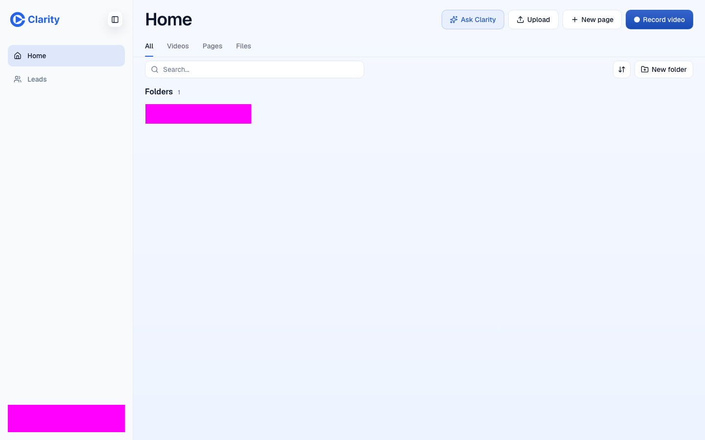
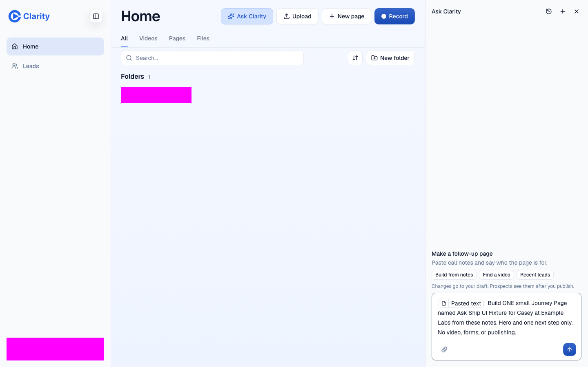
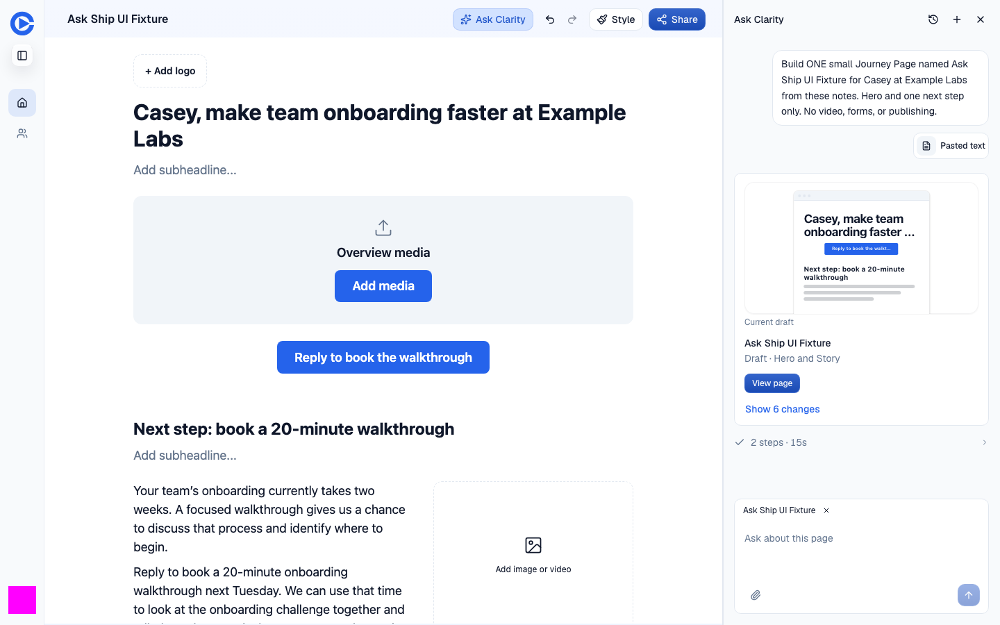
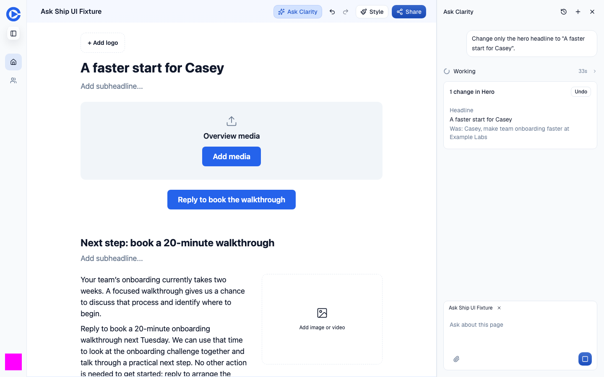
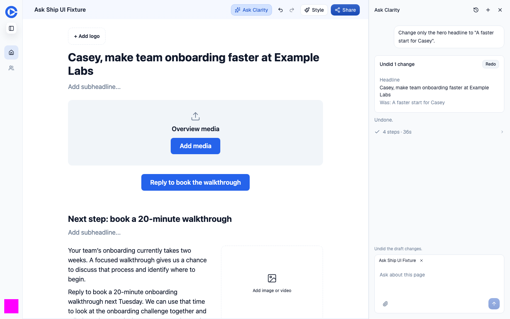
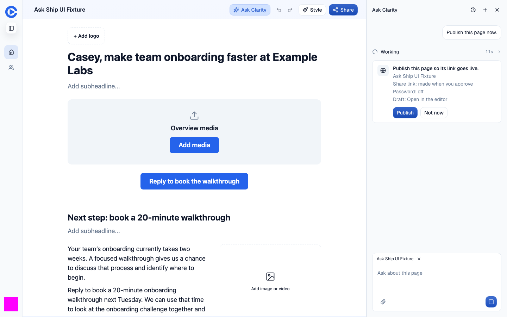
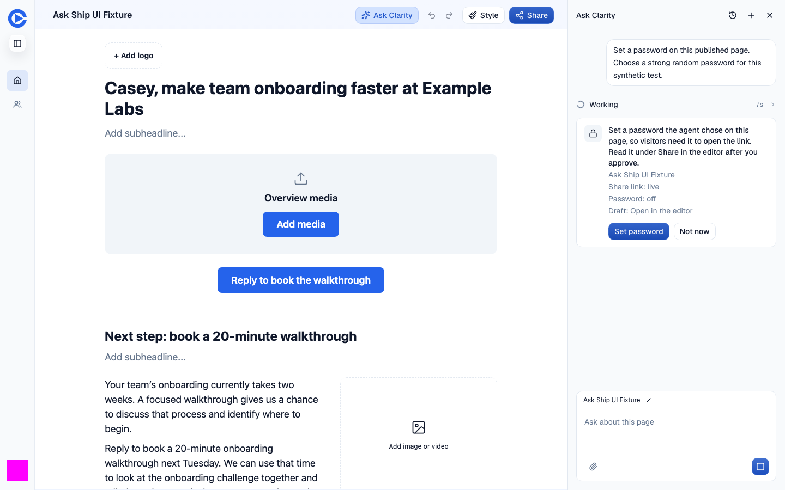
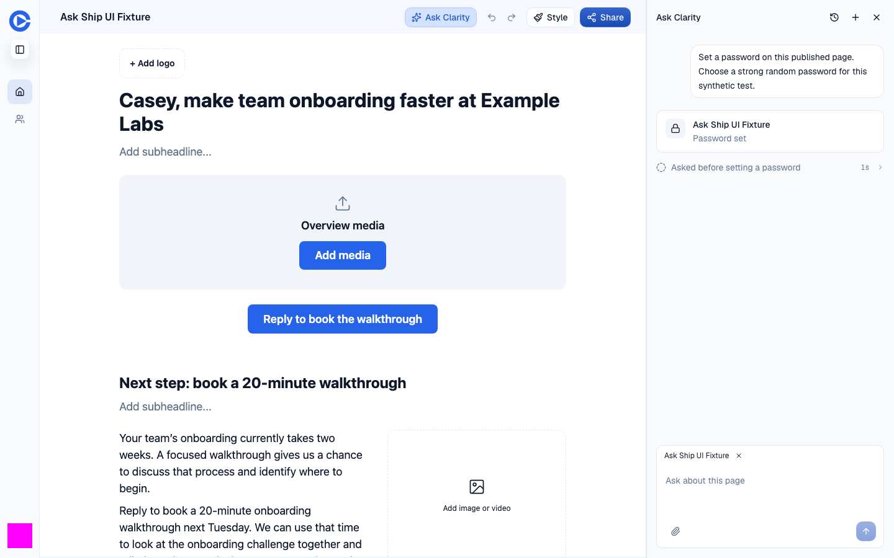
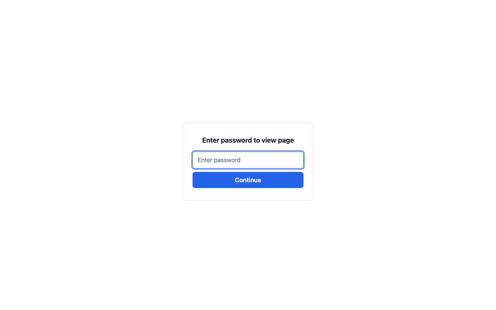
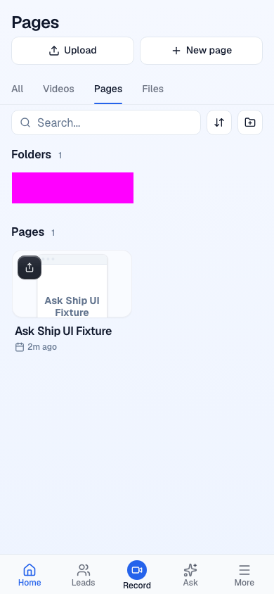
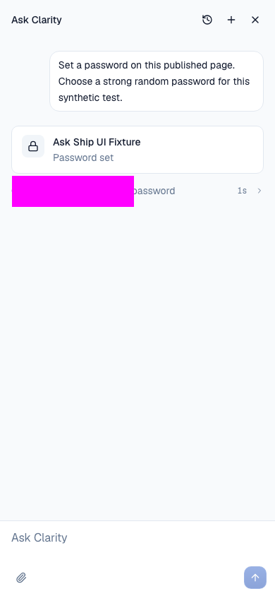
The UI pass captured 515 responses with no HTTP error status, console warning, console error or page error. Five ask_send requests and five streams, one ask_undo and two ask_approval_decide requests are tied to stored tool, card and turn_end events. Independent page reads prove the mutations. Transport requestfailed events were not separately subscribed.
Estimated model spend was USD 0.006742, based on recorded turn_end costMicros, including child generation usage once. The initial corrected harness attempt used USD 0.002156, the successful API proof USD 0.002125, and the independent UI proof USD 0.002461. This is an application-reported estimate, not a provider invoice.
Every generated fixture page and all recorded chats were deleted after each pass. Library and thread snapshots match their starting state, including after the route tests. Existing seeded fixtures were not changed. Owned browser processes and tabs were closed. The local evidence remains under .context/verify-loop/20261110-ask-ship/.
Squash merge only. Temporary eval-rig commits d0d48f378 and 96f69e0c4 exist in branch history and must never reach main. Both rig files are absent from the final tree. D21 #1687 is excluded. This PR adds only workers/frontend-router/migrations-auth/0062_ask_clarity.sql over main.